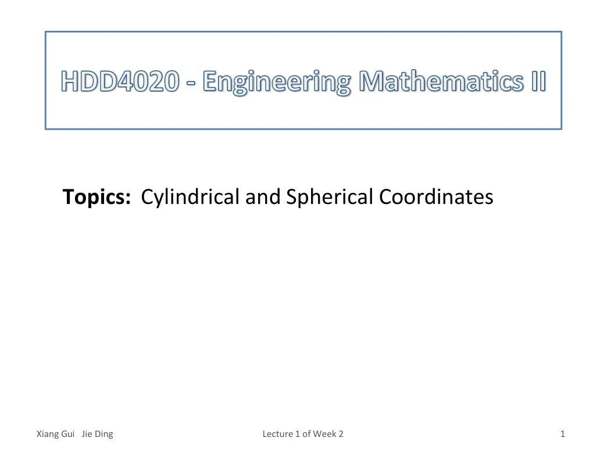

HDD4020 工程数学 II · 第 03 / 08 讲
第 2 章 · 柱坐标与球坐标
Cylindrical and Spherical Coordinates
所属章节：第 2 章 空间坐标与矩阵
资料来源 · 1 项 / 已附 0 项
Topic 2/EMII_Week2_Lecture1.pdf未附原文件
未附文件仅列原始名称；版本与核对日期由维护者登记。
本节在整门课中的位置
上一讲的极坐标用「距离 + 角度」定位平面上的点。本节把这个想法抬到三维空间：柱坐标保留高度 z 与极坐标 (r, θ)，球坐标则连高度也换成角度，用 (ρ, φ, θ) 三个量定位。两种坐标系的共同好处是——把具有旋转对称性的曲面（圆柱、球、圆锥）写成极简单的方程。
学完本节你应当能够：
- 写出柱坐标与直角坐标的互化公式，并说明 r、θ、z 各自的几何意义
- 写出球坐标三个分量 ρ、φ、θ 的定义与取值范围
- 在直角、柱、球三种坐标之间自由转换点坐标
- 把
z = r²、z² = x² + y²、ρ = 2sinφ sinθ这类方程识别成具体曲面 - 根据曲面的对称性判断该用哪种坐标系描述
与前后讲的衔接：本节的三种坐标之间的关系本身就是一组「变量之间的线性（或含三角的）关系式」。课件紧接着正是用「变量之间的线性关系」这句话，把坐标与矩阵接了起来。
3.1 从平面坐标到空间坐标
三维空间中的点可以用直角坐标 (x, y, z) 定位。柱坐标的做法很直接：把水平面上的 (x, y) 换成极坐标 (r, θ)，高度 z 原样保留，得到三元组 [r, θ, z]。
x = r cos θ，y = r sin θ，z = z
反向：r = √(x² + y²)，θ = tan⁻¹(y/x)（按象限修正），z = z。
三个分量的含义：r 是点到 z 轴的垂直距离（不是到原点的距离），θ 是点在 xy 平面上投影的方位角，z 是高度（可为负）。因此取值范围通常取 r ≥ 0、0 ≤ θ < 2π、z ∈ ℝ。
点到原点的距离用柱坐标表示特别简洁：
d² = r² + z²，而 r² = x² + y²，合起来就是 d² = x² + y² + z²。
这三步等式（r² = x² + y²、d² = r² + z²、d² = x² + y² + z²）在课件第 3 页并排给出，是后面所有转换的公共基础。
3.2 柱坐标的三张坐标面
固定三个分量中的任意一个，得到的曲面叫坐标面（coordinate surface）。柱坐标的三张坐标面各有明确形状：
| 方程 | 坐标面 | 说明 |
|---|---|---|
| r = 常数 | 以 z 轴为轴的圆柱面 | 半径等于该常数，高度不限 |
| θ = 常数 | 过 z 轴的半平面 | 与 xy 平面垂直 |
| z = 常数 | 水平平面 | 与 xy 平面平行 |
这三张面互相垂直，把空间切成一个个「弯的方块」。理解这一点，才能在后面处理三重积分时正确写出体积微元——虽然本课不展开三重积分，但曲面识别的思路完全一致。
3.3 例：识别三个柱坐标方程
课件给出三个方程，要求指出它们代表什么曲面。做法固定：把 r、θ 换成 x、y，再看形状。
（1）z = r²。由 r² = x² + y² 得 z = x² + y²，这是旋转抛物面（circular paraboloid）：顶点在原点，对称轴沿 z 轴正方向，开口向上。
（2）z = r cos θ。由 r cos θ = x 得 z = x，这是一个平面：它包含 y 轴（方程里没有 y），并且过点 (1, 0, 1)。
（3）z² = x² + y²。先写成柱坐标 z² = r²，即 z = ±r。这是两个圆锥共顶点于原点：一支开口向上（过 (1, 0, 1)），一支开口向下，对称轴都沿 z 轴。
x² + y² 一起出现 → 旋转对称，用柱坐标或球坐标；只有 r 与 z 的关系 → 旋转面；出现 ρ² → 球面。不要先把方程硬展开成 x、y、z 的多项式再猜。3.4 例：点的坐标互化
课件 Task 1a：给 P₁ = (1, 1, 2) 求柱坐标；给 P₂ = [2, π/3, 1] 求直角坐标。
P₁。r = √(1² + 1²) = √2，θ = π/4（第一象限），z = 2。故 P₁ = [√2, π/4, 2]。
P₂。x = 2cos(π/3) = 1，y = 2sin(π/3) = √3，z = 1。故 P₂ = (1, √3, 1)。
课件答案写作 (√2, π/4, 2) 与 (1, √3, 1)，与上面一致。注意两种记号的差别：直角坐标用圆括号 (x, y, z)，柱坐标与球坐标用方括号 [r, θ, z]、[ρ, φ, θ]——这不是装饰，是提醒你分量含义不同。
3.5 例：识别柱坐标方程（进阶）
课件 Task 1b：识别 r² + z² = 1 与 r = 4 sin θ。
（1）r² + z² = 1。因为 r² = x² + y²，直接得 x² + y² + z² = 1：以原点为心、半径为 1 的球面。
（2）r = 4 sin θ。两边乘 r：r² = 4r sin θ，即 x² + y² = 4y。配方：x² + (y − 2)² = 4。这是一个圆柱面：中心轴平行于 z 轴、过点 (0, 2, 0)，半径 2。
这两个结果与课件答案一致。注意第（2）题与上一讲极坐标里 r = 4 sin θ（圆）的区别：在平面里它是圆，在空间里没有 z 的限制，它是这个圆沿 z 方向「拉」出来的柱面。
3.6 球坐标：一个距离与两个角
球坐标（spherical coordinates）可以理解为「三维版的极坐标」。点 P 用 [ρ, φ, θ] 表示：
- ρ：P 到原点的距离（radial distance），ρ ≥ 0；
- φ：径向线段 OP 与 z 轴正方向的夹角（inclination angle，倾角），0 ≤ φ ≤ π；
- θ：过 P 与 z 轴的平面与 xz 平面的夹角（azimuthal angle，方位角），与柱坐标、极坐标中的 θ 是同一个角。
取值范围必须记牢：ρ ≥ 0，0 ≤ φ ≤ π。φ 只到 π，因为从 z 轴正方向转到负方向就转完了；若允许 φ 超过 π，同一个点会被重复表示。θ 与极坐标一样可任意加减 2π。
φ 与 θ 最容易混淆。记忆方法：φ 是从 z 轴「低头」量下来的角（像纬度从北极量起），θ 是绕 z 轴「转」的角（像经度）。
3.7 三种坐标之间的转换公式
把 OP 分解成「竖直分量」与「水平分量」两步，就能得到全部公式。先分解竖直方向：
z = ρ cos φ，水平分量 r = √(x² + y²) = ρ sin φ。
再把水平分量按 θ 分解：
x = ρ sin φ cos θ，y = ρ sin φ sin θ，z = ρ cos φ
反向：ρ = √(x² + y² + z²)，tan φ = r/z = √(x² + y²)/z，θ = tan⁻¹(y/x)。
球坐标与柱坐标之间只需两步：r = ρ sin φ、z = ρ cos φ，θ 保持不变。这三组公式必须能不看笔记写出来，因为考试中几乎每道空间题都要用。
3.8 例：由球坐标方程识别球面
课件 Example 1：识别 ρ = 2 sin φ sin θ 代表的曲面。
第一步，两边乘 ρ。ρ² = 2ρ sin φ sin θ。
第二步，逐项替换。ρ² = x² + y² + z²，而 ρ sin φ sin θ = y，所以
x² + y² + z² = 2y。
第三步，配方。x² + (y − 1)² + z² = 1：以 (0, 1, 0) 为心、半径 1 的球面。
这个球过原点（ρ = 0 时方程成立），并且在原点处与 xz 平面相切。系数 2 出现在 sin θ 前，说明球心在 y 轴上；出现在 sin φ cos θ 前则球心在 x 轴上；只含 cos φ 则球心在 z 轴上。
3.9 例：一点的三种坐标
课件 Example 2：把球坐标 [8, π/3, π/6] 转成直角坐标与柱坐标。
直角坐标。
x = 8 sin(π/3) cos(π/6) = 8 · (√3/2) · (√3/2) = 6
y = 8 sin(π/3) sin(π/6) = 8 · (√3/2) · (1/2) = 2√3
z = 8 cos(π/3) = 8 · (1/2) = 4
得 (6, 2√3, 4)。
柱坐标。r = ρ sin φ = 8 sin(π/3) = 4√3，θ = π/6，z = 4，即 [4√3, π/6, 4]。
验算。r² + z² = 48 + 16 = 64 = ρ²，与 ρ = 8 一致；x² + y² + z² = 36 + 12 + 16 = 64，同样一致。凡是转换题，用 ρ² = x² + y² + z² 回代一次就能自查。
3.10 例：把球面方程写成球坐标形式
课件 Task 2a：求两个球的球坐标方程。
（1）(x − 1)² + y² + z² = 1。展开得 x² + y² + z² = 2x，即 ρ² = 2ρ sin φ cos θ，约去一个 ρ（ρ ≠ 0 时）得 ρ = 2 sin φ cos θ。
（2）x² + y² + (z − 1)² = 1。展开得 x² + y² + z² = 2z，即 ρ² = 2ρ cos φ，得 ρ = 2 cos φ。
两个结果与课件答案一致。规律很清楚：球心在 x 轴 → 出现 sin φ cos θ；球心在 y 轴 → sin φ sin θ；球心在 z 轴 → 只出现 cos φ。
3.11 例：圆锥与偏心球
课件 Task 2b：求 z² = x² + y² 与 x² + y² + (z − a)² = 1 的球坐标方程并识别曲面。
（1）z² = x² + y²。代入 z = ρ cos φ、x² + y² = ρ² sin²φ：
ρ²cos²φ = ρ²sin²φ，即 tan²φ = 1，故 φ = π/4 或 φ = 3π/4。
课件写作 φ = ±π/4，在 0 ≤ φ ≤ π 的约定下正好对应这两个值：φ = π/4 是开口向上的锥面，φ = 3π/4 是开口向下的锥面。这是「不含 ρ 的球坐标方程」的典型——它描述的是过原点的锥面，与 ρ 无关。
（2）x² + y² + (z − a)² = 1。展开：x² + y² + z² − 2az + a² = 1，代入 ρ² = x² + y² + z²、z = ρ cos φ：
ρ² − 2aρ cos φ + a² = 1，即 ρ² − 2aρ cos φ = 1 − a²。
这是以 (0, 0, a) 为心、半径 1 的球面，与课件给出的一致。注意它与 Task 2a（2）的区别：那里 a = 1，右边为 0，方程退化成 ρ = 2cos φ 的简单形式；a ≠ 1 时无法约简，只能保留二次式。
3.12 怎样选择坐标系
三种坐标都能描述同一个点，但方程的复杂度差别很大。选坐标系的判据是对称性：
| 曲面 / 区域的对称性 | 首选坐标 | 理由 |
|---|---|---|
| 绕 z 轴的旋转对称（圆柱、旋转抛物面、圆锥） | 柱坐标 | 方程里只出现 r 与 z，θ 消失 |
| 关于原点对称（球、锥、过原点的平面） | 球坐标 | 方程里只出现 ρ 与 φ，θ 消失或形式简单 |
| 长方体、边界平行于坐标面的区域 | 直角坐标 | 边界就是 x = 常数、y = 常数 |
含 x² + y² 且带一个线性 z 项 | 柱坐标 | 移项后成为 z = r² 或 z = 2r 型 |
这条判据不只为了「好算」，也为了「看得懂」：同一个球面在直角坐标里是 x² + y² + z² = 1，在球坐标里就是 ρ = 1——一句话说清「到原点距离恒为 1」。
3.13 常见误解
- 把 ρ 与 r 混用：r 是到 z 轴的距离，ρ 是到原点的距离，
ρ² = r² + z²，只有 z = 0 时两者才相等。 - φ 与 θ 位置写反：球坐标顺序是 [ρ, φ, θ]，φ 是倾角（从 z 轴量），θ 是方位角（绕 z 轴量）。写成 [ρ, θ, φ] 会得到完全不同的点。
- φ 的取值范围写成 0 ≤ φ ≤ 2π：正确范围是 0 ≤ φ ≤ π，超出后同一个点会被重复表示。
- 识别曲面时直接展开成多项式：应先在柱/球坐标下看方程形状，再决定是否展开；
z = r cos θ一眼是平面，绕成多项式反而慢。 - 忘记「无 z 限制」的柱面：平面上的
r = 4 sin θ是圆，空间里同样的方程是柱面。
原版图页（源 PDF 插图页）

| English | 中文 | 说明 / 例句 |
|---|---|---|
| cylindrical coordinates | 柱坐标 | A point is given as [r, θ, z] with x = r cos θ, y = r sin θ, z = z. |
| spherical coordinates | 球坐标 | A point is given as [ρ, φ, θ] with x = ρ sin φ cos θ, y = ρ sin φ sin θ, z = ρ cos φ. |
| radial distance | 径向距离 | ρ, the distance from the point to the origin. |
| inclination angle | 倾角 | φ, the angle between OP and the positive z-axis, 0 ≤ φ ≤ π. |
| azimuthal angle | 方位角 | θ, the angle between the xz-plane and the plane containing P and the z-axis. |
| coordinate surface | 坐标面 | The surface obtained by holding one coordinate constant; r = constant is a cylinder. |
| circular paraboloid | 旋转抛物面 | z = x² + y², i.e. z = r² in cylindrical coordinates. |
| cone | 圆锥面 | z² = x² + y², i.e. φ = π/4 or 3π/4 in spherical coordinates. |
| half-plane | 半平面 | θ = constant in cylindrical coordinates. |
| identify a surface | 识别曲面 | Convert the equation to Cartesian form and recognise its shape. |
| convert coordinates | 坐标互化 | r = ρ sin φ, z = ρ cos φ, ρ² = r² + z² = x² + y² + z². |
| symmetry | 对称性 | The criterion used to choose cylindrical or spherical coordinates. |
| sphere in spherical form | 球面的球坐标形式 | ρ = 2 cos φ is the sphere x² + y² + (z − 1)² = 1. |
| distance to the z-axis | 到 z 轴的距离 | r = √(x² + y²), which is not the same as ρ. |
柱坐标。r = √(1 + 1) = √2；点在第二象限，θ = 3π/4（不是 tan⁻¹(−1) = −π/4，那是对应第四象限的主值）；z = 2。故为 [√2, 3π/4, 2]。
球坐标。ρ = √(1 + 1 + 4) = √6；cos φ = z/ρ = 2/√6，故 φ = cos⁻¹(2/√6) ≈ 35.3°；θ = 3π/4。故为 [√6, cos⁻¹(2/√6), 3π/4]。
验算。ρ sin φ = √6 · √(1 − 4/6) = √6 · √(1/3) = √2 = r，与柱坐标的 r 一致。
[4, π/4, π/3] 化为直角坐标与柱坐标。直角坐标。x = 4 sin(π/4) cos(π/3) = 4 · (√2/2) · (1/2) = √2；y = 4 sin(π/4) sin(π/3) = 4 · (√2/2) · (√3/2) = √6；z = 4 cos(π/4) = 2√2。
柱坐标。r = ρ sin φ = 2√2，θ = π/3，z = 2√2。
验算。r² + z² = 8 + 8 = 16 = ρ²；x² + y² + z² = 2 + 6 + 8 = 16。两处都吻合，说明三个量没有代错。
r² + z² = 2z。换直角坐标。r² = x² + y²，代入得 x² + y² + z² = 2z。
配方。x² + y² + (z − 1)² = 1：以 (0, 0, 1) 为心、半径 1 的球面。
换球坐标验算。ρ² = 2ρ cos φ，即 ρ = 2cos φ，与 3.10 的 Task 2a（2）完全一致。这说明柱坐标与球坐标两条路给出同一个答案。
ρ = 2 sin φ cos θ + 2 sin φ sin θ 所代表的曲面。两边乘 ρ。ρ² = 2ρ sin φ cos θ + 2ρ sin φ sin θ。
替换。ρ sin φ cos θ = x、ρ sin φ sin θ = y，故 x² + y² + z² = 2x + 2y。
配方。(x − 1)² + (y − 1)² + z² = 2：以 (1, 1, 0) 为心、半径 √2 的球面。
点评。两个三角项同时出现，相当于球心在 x、y 两个方向都有偏移。只要坚持「乘 ρ → 替换 → 配方」三步，再复杂的球坐标方程都能还原。
- 把点 (2, −2, 3) 化为柱坐标与球坐标。
- 把柱坐标
[3, π/6, 4]化为直角坐标与球坐标。 - 识别柱坐标方程
z = 2r所代表的曲面。 - 识别球坐标方程
ρ sin φ = 2所代表的曲面。 - 把
x² + y² = 4z写成球坐标方程。
参考答案与思路
1. r = √(4 + 4) = 2√2；点在第四象限，θ = −π/4（或 7π/4）；z = 3，柱坐标为 [2√2, −π/4, 3]。ρ = √(8 + 9) = √17，cos φ = 3/√17，球坐标为 [√17, cos⁻¹(3/√17), −π/4]。
2. x = 3cos(π/6) = 3√3/2，y = 3sin(π/6) = 3/2，z = 4。ρ = √(9 + 16) = 5，φ = cos⁻¹(4/5)，θ = π/6。
3. z = 2r 即 z² = 4(x² + y²)，是顶点在原点、开口沿 z 轴的圆锥面，半顶角满足 tan α = 1/2。
4. ρ sin φ = r = 2，即 x² + y² = 4：以 z 轴为轴、半径 2 的圆柱面。
5. 代入 x² + y² = ρ² sin²φ、z = ρ cos φ：ρ² sin²φ = 4ρ cos φ，即 ρ sin²φ = 4 cos φ（ρ ≠ 0）。
z = r²、z² = x² + y²、ρ = 2cos φ 这类标准曲面必然出现。θ = tan⁻¹(y/x) 只给主值，第二、三象限的点必须加 π；直接用计算器结果会得到镜像点。x² + y² 就想到柱坐标，遇到 x² + y² + z² 就想到球坐标。换完坐标立刻用 ρ² = r² + z² 回代验算，能挡住绝大多数低级错误。方法与检查清单
坐标互化的四步法
- 判断目标坐标系：柱坐标看 r 与 θ，球坐标看 ρ、φ、θ
- 先算距离量（r 或 ρ），再算角度（θ 按象限修正，φ 用
cos φ = z/ρ） - 写答案时用对括号：直角坐标
(x, y, z)，柱/球坐标用方括号 - 回代验算：
ρ² = r² + z² = x² + y² + z²，三个平方和必须相等
识别曲面的检查项
- 方程里是否只出现
x² + y²的组合（→ 旋转面，用柱坐标） - 是否只出现 ρ 与 φ（→ 过原点的锥面或球面）
- 是否缺少某个变量（缺 z → 柱面；缺 x、y → 平面）
- 化简后能否配方成球面或抛物面的标准形式
- 答案是否写清了曲面类型与关键参数（球心、半径、轴、顶点）
| 源文件 | 页码 / 位置 | 覆盖的知识点 |
|---|---|---|
| Topic 2/EMII_Week2_Lecture1.pdf | p2–p3 | 柱坐标定义、互化公式、r² = x² + y² 与距离公式 |
| Topic 2/EMII_Week2_Lecture1.pdf | p4–p5 | 例：识别 z = r²、z = r cos θ、z² = x² + y² 三个曲面 |
| Topic 2/EMII_Week2_Lecture1.pdf | p6–p7 | Task 1a 点互化、Task 1b 识别 r² + z² = 1 与 r = 4 sin θ |
| Topic 2/EMII_Week2_Lecture1.pdf | p8–p9 | 球坐标定义、ρ / φ / θ 的几何含义与取值范围 |
| Topic 2/EMII_Week2_Lecture1.pdf | p10 | 球、柱、直角三种坐标的完整转换公式 |
| Topic 2/EMII_Week2_Lecture1.pdf | p11–p13 | Example 1（ρ = 2sinφ sinθ）与 Example 2（[8, π/3, π/6] 的两种转换） |
| Topic 2/EMII_Week2_Lecture1.pdf | p14–p15 | Task 2a 与 Task 2b：球面、圆锥的球坐标方程 |
| （跳过）_info_*.html.txt | 全篇 | Moodle 快照，无讲义内容 |
| （跳过）Topic 1/Lecture 2.html | 全篇 | Moodle 登录页，无正文 |
| （拓展） | — | 3.12 的「按对称性选坐标系」对照表、3.13 的五条误解属归纳性补充；Task 2b 的 φ = ±π/4 按 0 ≤ φ ≤ π 解释为 π/4 与 3π/4，属记号澄清，不新增考点 |